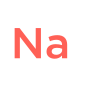

Состав AKSAY-SU отличается разнообразием биологически-активных веществ
Способствуют улучшению процесса пищеравания и усвоения белков, жиров и углеводов

Ионы натрия
Играют важную роль в водно-солевом обмене
Регулирует процессы возбуждения и торможения в нервной системе

Способствует нормальному росту зубов и профилактике кариеса